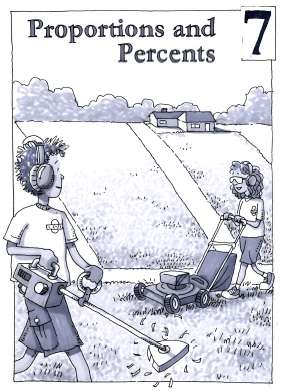

Chapter 7
Proportions and Percents
Navigation is reserved for this future chapter. Add the chapter source later and these links can become active without changing the textbook structure.
Lessons
- 7 OpeningChapter 7 OpeningFuture unit
- 7.1.1Distance, Rate, and TimeFuture unit
- 7.1.2Scaling QuantitiesFuture unit
- 7.1.3Solving Problems Involving PercentsFuture unit
- 7.1.4Equations with Fraction and Decimal CoefficientsFuture unit
- 7.1.5Creating Integer CoefficientsFuture unit
- 7.1.6Creating Integer Coefficients EfficientlyFuture unit
- 7.1.7Percent Increase and DecreaseFuture unit
- 7.1.8Simple InterestFuture unit
- 7.2.1Finding Missing Information in Proportional RelationshipsFuture unit
- 7.2.2Solving ProportionsFuture unit
- 7 ClosureChapter 7 ClosureFuture unit